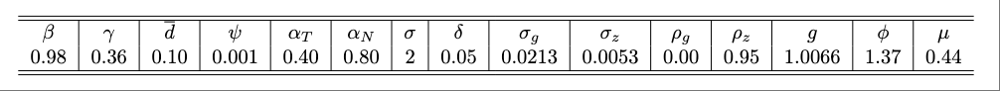

Exercise 5.2
The Effect of Nonstationary Productivity Shocks on the Trade Balance in the Presence of Nontraded Goods
Problem
This exercise introduces nontradable goods a subject that we will take up in detail in chapter 8. You may choose to postpone working on this exercise until you have read that chapter. However, the tools developed in the current chapter should be sufficient to do this exercise. Consider an economy populated by a large number of identical households with preferences described by the utility function
\[ E_0 \sum_{t=0}^{\infty} \beta^t \frac{[C_t^{\gamma}(1-h_t)^{1-\gamma}]^{1-\sigma}-1} {1-\sigma}, \]
where \(C_t\) denotes consumption and \(h_t\) denotes hours worked.
Let \(A_t\) denote domestic absorption. That is, \(A_t\) satisfies the identity
\[ A_t = C_t + I_t, \]
where \(I_t\) denotes gross domestic investment. Assume that \(A_t\) is a composite of tradable and nontradable goods produced via the following aggregator function:
\[ A_t = \left[ \eta (A_t^T)^{1-1/\mu} + (1-\eta) (A^N_t)^{1-1/\mu} \right]^{1/(1-1/\mu)}, \]
where \(A^T_t\) and \(A^N_t\) denote, respectively, domestic absorptions of tradable and nontradable goods. Tradable and nontradable goods, denoted, respectively, \(Y^T_t\) and \(Y^N_t\), are produced under constant returns to scale using capital and labor as inputs:
\[ Y^T_t = z_t (K^T_t)^{1-\alpha_T} (X_t h^T_t)^{\alpha_T} \]
and
\[ Y^N_t = z_t (K^N_t)^{1-\alpha_N} (X_t h^N_t)^{\alpha_N}, \]
where \(K^i_t\) and \(h^i_t\) denote, respectively, capital and labor services employed in sector \(i\), for \(i=T,N\). The variable \(z_t\) represents an exogenous, stationary, stochastic productivity shock and \(X_t\) represents an exogenous, stochastic, nonstationary productivity shock. The capital stocks evolve according to the following laws of motion:
\[ K^T_{t+1} = (1-\delta)K^T_t + I^T_t - \frac{\phi}2 \left( \frac{K^T_{t+1}}{K^T_t}-g \right)^2K^T_t \]
and
\[ K^N_{t+1} = (1-\delta)K^N_t + I^N_t - \frac{\phi}2 \left( \frac{K^N_{t+1}}{K^N_t}-g \right)^2K^N_t, \]
where \(I^i_t\) denotes investment in sector \(i=T,N\) and satisfies
\[ I_t = I^T_t + I^N_t. \]
Market clearing in the nontraded sector requires that domestic absorption equal production:
\[ Y^N_t = A^N_t. \]
Also, market clearing in the labor market requires that
\[ h_t = h^T_t + h^N_t. \]
Assume that the country has access to a single, one-period, internationally traded bond that pays the debt-elastic gross interest rate \(R_t\) when held between periods \(t\) and \(t+1\). The evolution of the household’s net foreign debt position, \(D_t\), is given by
\[ \frac{D_{t+1}}{R_t} = D_t + A^T_t -Y^T_t, \]
with
\[ R_t = R^* + \psi \left[ e^{\tilde{D}_{t+1}/X_t-\overline{d}}-1 \right], \]
where \(\tilde{D}_t\) denotes average external debt per capita due in period \(t\). Because households are homogeneous, we have that in equilibrium the following condition must hold:
\[ \tilde{D}_t = D_t. \]
Finally, assume that the stationary productivity shock \(z_t\) follows an AR(1) process of the form
\[ \ln z_t = \rho_z \ln z_{t-1} + \sigma_z \epsilon^z_t. \]
And the nonstationary productivity shock evolves according to
\[ \ln (g_t/g) = \rho_g \ln(g_{t-1}/g) + \sigma_g \epsilon^g_t, \]
where
\[ g_t \equiv \frac{X_t}{X_{t-1}}, \]
\(\rho_z,\rho_g\in (-1,1)\), \(\sigma_z,\sigma_g>0\), and \(\epsilon^z_t\) and \(\epsilon^g_t\) are independent white noises distributed \(N(0,1)\).
Assume that the time unit is one quarter. Use the following table to calibrate the model:

Guidelines for calibrating the parameter \(\eta\) are given below.
When addressing the numerical portions of the following questions, write your answers to 4 decimal places.
Write down the complete set of equilibrium conditions. Count the number of variables and equations.
Let \(p^N_t\) and \(p_t\) be the (shadow) relative prices of the nontradable good and the composite good in terms of tradable goods, respectively. Write down expressions for \(p^N_t\) and \(p_t\) in terms of \(A^T_t\) and \(A^N_t\). Are \(p^N_t\) and \(p_t\) stationary variables? Why?
Write down the complete set of equilibrium conditions in stationary form along a balanced-growth path.
Derive a restriction on \(R^*\) that guarantees that the steady-state value of \(d_{t+1} \equiv D_{t+1}/X_t\) along the balanced-growth path equals \(\overline{d}\). Compute the steady state of the model. Set \(\eta\) to ensure that the share of nontraded output in total output, defined as \(p^N_tY^N_t/(p^N_tY^N_t+Y^T_t)\) equals 0.65 in the steady state. Report the numerical value of \(\eta\) and the steady-state values of all endogenous variables of the model.
Report the numerical values of the eigenvalues of the matrix \(h_x\) defining the linearized equilibrium law of motion of the state vector.
Define GDP as \(Y_t = (Y^T_t+p^N_tY^N_t)/p_t\). Define the trade balance, \(TB_t\), as \(TB_t = Y_t -C_t -I_t\). Compute the unconditional standard deviations of the growth rates of consumption and output, defined, respectively, as \(\Delta C_t \equiv \log(C_t/C_{t-1})\) and \(\Delta Y_t \equiv \log(Y_t/Y_{t-1})\). Compute the correlation between \(\Delta Y_t\) and the trade-balance-to-output ratio, defined as \(tby_t \equiv TB_t/Y_t\).
Compute other second moments of your choice and discuss whether they are in line with empirical regularities in emerging economies.
Explain how you would reparameterize the model to make it coincide with the one-sector model studied in section 5.2. Answer the previous two questions under your proposed parameterization.
Based on your answers to the previous three questions, evaluate the ability of the present traded-nontraded model to explain key stylized facts in emerging countries. Provide intuition making sure to emphasize the differences you can identify between the dynamics implied by the one-good SOE-RBC model and the present two-good SOE-RBC model.
Answer
No solution has been posted yet. If you have a solution, we invite you to share it in the comment box at the bottom of this page.